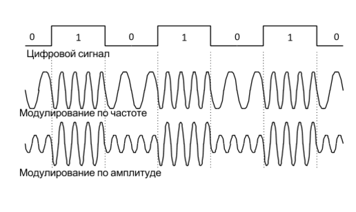
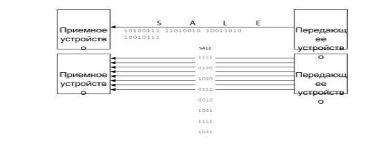
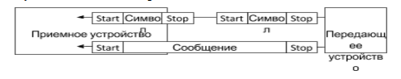
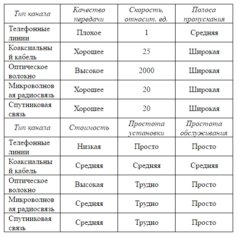
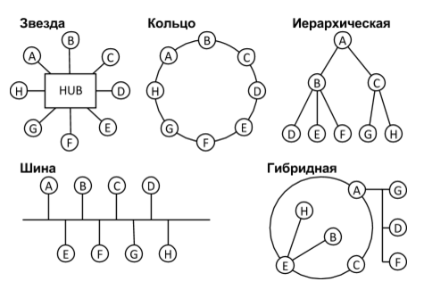

Особенности построения систем телемеханики для ЭСБ различного назначения
Принципы построения систем телемеханики для ЭСБ.
Принципы построения телемеханических систем рассмотрим на примере системы телеизмерения.
Телеизмерение – получение информации о значениях измеряемых параметров контролируемых или управляемых объектов методами и средствами телемеханики. Телеизмерение бывает нескольких видов:
Телеизмерение по вызову – телеизмерение по команде, посылаемой с пункта управления на контролируемый пункт и вызывающей подключение на контролируемом пункте передающих устройств, а на пункте управления – соответствующих приемных устройств. Телеизмерение по вызову позволяет использовать одну линию связи (канал телеизмерения) для поочередного наблюдения за многими объектами телеизмерения. Оператор с помощью особой системы телеуправления может подключать к каналу телеизмерения желаемый объект телеизмерения или применять автоматический опрос объектов телеизмерения циклически по заданной программе.
Телеизмерение по выбору – телеизмерение путем подключения к устройствам пункта управления соответствующих приемных приборов при постоянно подключенных передающих устройствах на контролируемых пунктах.
Tелеизмерение текущих значений (ТИТ) – получение информации о значении измеряемого параметра в момент опроса устройством телемеханики.
Телеизмерение интегральных значений (ТИИ) – получение информации об интегральных значениях измеряемых величин, проинтегрированных по заданному параметру, например, времени, в месте передачи.
Сущность телеизмерения заключается в том, что измеряемая величина, предварительно преобразованная в ток или напряжение, дополнительно преобразуется в сигнал, который затем передается по линии связи. Таким образом, передается не сама измеряемая величина, а эквивалентный ей сигнал, параметры которого выбирают так, чтобы искажения при передаче были минимальными. Главное требование, предъявляемое к системе телеизмерения, заключается в том, что она должна обеспечить заданную точность.
Поэтому основной характеристикой системы телеизмерения является точность. Точность характеризуется статической погрешностью или просто погрешностью. Погрешность телеизмерения определяют как максимальную разность между показаниями выходного индикатора на приемной стороне и действительным значением телеизмеряемой величины.
Цифровые системы телеизмерения. Цифровые или кодоимпульсные системы ТИ отличает дискретная структура сигнала у, подаваемого в линию или в канал связи, не имеющая линейной зависимости от измеряемой величины.
Сигнал, отображающий значение измеряемой величины, в цифровых системах ТИ представляет собой кодовую комбинацию одного из используемых кодов.
На рис. 1 приведена структурная схема устройства контролируемого пункта, отображающая работу многоканальной цифровой системы ТИ.
Измеряемые величины D1, …, DN через соответствующие датчики Д1, …, ДN с унифицированным выходным сигналом Dx1(t), …, DxN(t) поступает на вход аналоговых коммутирующих ключей Кл1, …,КлN, которые управляются коммутатором каналов Кк. Последний работает в циклическом режиме, переключаясь по окончании передачи очередного телеизмерения.
Коммутатор Кк и ключи Кл образуют измерительные каналы, формируемые по принципу временного разделения, что позволяет одновременно с передачей осуществлять дискретизацию функции Х(t) по времени.
Преобразование дискретных отсчетов в код происходит в следующем блоке цифровой системы ТИ – в аналого-цифровом преобразователе (АЦП), в выходном регистре RG которого формируется цифровой код текущего значения телеизмеряемой величины D.

Рисунок 1 - Структурная схема устройства контролируемого телемеханического пункта
С выходного регистра RG АЦП код считывается и передаётся в канал связи через устройство повышения достоверности передачи информации (УПД). Считывание цифрового эквивалента с RG и выдача его в канал связи производится в последовательном коде, для реализации которого в структуру системы вводится коммутатор Кэ и схемы совпадения схемы И1, …, Ик. Частота fг переключения Кэ задаётся генератором тактовых импульсов (ГТИ). Через схемы И1, …, Ик код из RG АЦП поступает в УПД, в котором реализуется один из известных алгоритмов кодирования сообщения принятым помехоустойчивым кодом.
Канал связи - канал передачи, технические устройства и тракт связи, в котором сигналы, содержащие информацию, распространяются от передатчика к приёмнику. Технические устройства (усилители электрических сигналов, устройства кодирования и декодирования сигналов и др.) размещают в промежуточных (усилительных или переприёмных) и оконечных пунктах связи. В качестве тракта передачи пользуются разнообразными линиями - проводными (воздушными и кабельными), радио и радиорелейными, радиоволноводными и т.д. Передатчик преобразует сообщения в сигналы, подаваемые затем на вход канала связи: по принятому сигналу на выходе канала связи приёмник воспроизводит переданное сообщение. Передатчик, канал связи и приёмник образуют систему связи, или систему передачи информации. По назначению системы, в состав которой входят каналы связи, различают: каналы телефонные, звукового вещания, телевизионные, фототелеграфные (факсимильные), телеграфные, телеметрические, телекомандные, передачи цифровой информации; по характеру сигнало в, передачу которых обеспечивают каналы связи, различают каналы непрерывные и дискретные как по значениям, так и по времени. В общем случае канал связи. имеет большое число входов и выходов, может обеспечивать двустороннюю передачу сигналов.
Коммуникационный канал соединяет передатчик и приемник в сети передачи данных. Соединение может осуществляться по линии (например, телефонным проводам, коаксиальному оптоволоконному кабелю), которая физически соединяет два устройства, или может использовать спутниковую, микроволновую, сотовую радиосвязь, инфракрасные лучи.
Характеристики каналов
Каждый тип коммуникационного канала использует свои линии связи, приемно-передающие устройства и способы передачи сообщений, имеющие различные характеристики и применяется при различных требованиях к передаче данных. Рассмотрим некоторые из этих характеристик.
1. Аналоговый или цифровой сигнал. В аналоговом канале цифровой сигнал передается в форме модулированной по частоте или амплитуде гармоники. На рис.2 показаны примеры. Если аналоговый сигнал находятся в звуковом диапазоне, то при модулировании по частоте можно было бы услышать чередующиеся высокие (1) и низкие (0) тона, а при амплитудной – громкие (1) и тихие (0) звуки одного тона. Цифровая передача является более быстрой и эффективной, при этом происходит меньше ошибок, не нужны модемы, поскольку не требуется модуляция/демодуляция. Чтобы улучшить передачу данных, разработаны цифровые телефонные линии. Однако они еще не очень распространены.

Рисунок 2 - Цифровой и аналоговый сигналы
2. Последовательная и параллельная передача. При последовательной передаче биты передаются один за другим. При параллельной передаче два или более бита идут одновременно по отдельным линиям. Конечно, параллельные каналы обеспечивают большую скорость, однако и более дороги, поэтому используются, если увеличение скорости передачи более важно, чем уменьшение затрат.

Рисунок 3 - Последовательная и параллельная передача данных
3. Асинхронная и синхронная передача. При передаче сообщений важна синхронная работа передающего и приемного устройства, иначе полученный сигнал не может быть правильно интерпретирован, т.к. принимающая сторона не сможет определить, где начинается и заканчивается сообщение. При асинхронной передаче каждый символ посылается отдельно и снабжается двумя дополнительными битами - в начале (start bit) и в конце (stop bit), которые обозначают границы символа и таким образом служат для синхронизации. При синхронной передаче начальным и конечным битами снабжаются не каждый символ, а целые блоки символов, пакеты. Асинхронная передача менее дорога, проще в технической реализации и используется на низкоскоростных каналах. Синхронная передача дороже, но более быстра и эффективна и используется на высокоскоростных каналах.

Рисунок 4 - Асинхронная и синхронная передача
4. Симплексная и дуплексная передача. Симплексный канал (simplex) позволяет передавать сообщения только в одну сторону. Полудуплексные каналы (half-duplex) позволяют вести передачу в обоих направлениях, но не одновременно, а по очереди. Такие каналы применяются для низкоскоростной передачи данных или когда не требуется немедленный ответ. Полнодуплексные каналы (full-duplex) позволяют передавать данные в обоих направлениях одновременно. Такие каналы используются для высокоскоростной передачи или когда требуется обработка данных на удаленном компьютере и получение ответов от него в реальном времени.
5. Полоса пропускания канала (bandwidth) - это разница между наибольшей и наименьшей частотой, которые могут быть использованы для передачи данных в канале. Чем шире полоса пропускания, тем больше различных частот может использоваться и тем больше данных может передаваться в единицу времени. Узкополосные линии не применяются для передачи звукового или голосового сигнала. Среднеполосные линии используются для передачи голоса и данных. Широкополосные линии используются для высокоскоростной передачи данных между компьютерными системами.
Типы коммуникационных каналов
Коммуникационные каналы оказывают значительное влияние на производительность, надежность, стоимость и безопасность информационной системы. Поэтому необходимо понимать различия между ними и знать их основные характеристики. В таблице 1 приведена упрощенная классификация коммуникационных каналов по типу используемых линий связи и на качественном уровне сравниваются их основные характеристики.
Телефонные линии. Большинство телефонных линий используют два изолированных медных провода. Скрученные спирально, они называются витой парой. Большое количество таких пар сводятся в кабели, имеющие защитную оболочку. Телефонные линии удобны по той причине, что они проведены во многих местах и уже готовы к использованию. Витые пары используются и в локальных вычислительных сетях. Для улучшения качества связи и ускорения передачи данных телефонные компании США разработали стандарт ISDN (Integrated Services Digital Network) на цифровые телефонные линии, которые используют три витые пары и позволяют работать без использования модема на скорости 128Kbps (28.8Kbps - обычная скорость с на аналоговых телефонных линиях).
Коаксиальный кабель. Используется для междугородних телефонных линий и в локальных сетях. По такому кабелю можно передавать как аналоговый, так и цифровой сигнал. Он представляет из себя медные проводники, окруженные алюминиевой оплеткой. За счет такой изоляции коаксиальный кабель меньше подвержен внешним шумовым воздействиям, поэтому возможно его использование на более высоких скоростях передачи данных.
Оптическое волокно. Оптоволоконный кабель может состоять из тысяч тонких нитей из стекла или пластика, по которым передаются сигналы в виде световых волн. Такой кабель обладает намного большей пропускной способностью, чем коаксиальный. Он практически не подвержен внешним помехам и поэтому дает наименьший процент ошибок при передаче. Сообщения, передаваемые по такому кабелю практически невозможно перехватить, поэтому он обеспечивает высокий уровень безопасности передачи.
Микроволновая радиосвязь. Используется для передачи данных или голоса на большие расстояния. Каналы микроволновой связи состоят из сети радиорелейных (ретрансляционных) станций, отстоящих друг от друга на расстояние до 40 км. Каждая станция имеет вышку с гиперболическими антеннами, получает сигнал, усиливает его и передает на следующую станцию.
Спутниковая связь. Спутники связи работают как ретранслятор. В отличие от других каналов, стоимость передачи через спутник не зависит от расстояния, на которое передается сообщение.
Сотовая радиосвязь. Предназначена для обслуживания мобильных абонентов. Территория, обслуживаемая такой связью, делится на ячейки диаметром до 20 км. Каждую ячейку обслуживает специальная станция, соединенная с общим центром управления. При пересечении границы ячеек абонент автоматически переключается на новую станцию. Задача центра управления - координировать работу станций и управлять переключениями.

Таблица 1 - Качественное сравнение коммуникационных каналов
Типы коммуникационных сетей
По различным признакам - по принадлежности, способам организации сети, по типам решаемых задач, по территориальным масштабам - сети принято делить на локальные, региональные и глобальные.
Локальные сети
Локальные вычислительные сети (ЛВС) возникли с появлением микроЭВМ в 80-х годах. Они строятся организациями или объединениями, расположенными на небольшой территории. Для построения локальных сетей в настоящее время используется стандартизованные комплексы оборудования. Самым распространенным стандартом является EtherNet, различные варианты которого позволяют строить сети, работающие на скоростях от 10 до 200Mbps.
Компоненты
Локальные сети состоят из семи основных компонент:
- Сетевые клиенты. Это компьютеры или терминалы, которые подключаются к сети, чтобы использовать ее ресурсы.
- Сетевые серверы. Один или несколько компьютеров сети могут играть роль серверов. В разных ЛВС роль серверов может быть разная: файловый сервер, серверы баз данных и т.д. Серверы могут выполнять и роль клиентов в сети.
- Сетевые ресурсы. Это принтеры, устройства дисковой памяти, базы данных, модемы, которые могут находиться на одном из серверов или подключаться к сети самостоятельно. По сути, это устройства, которые предоставляются клиентам в общее пользование и ради которых строится локальная сеть.
- Сетевое программное обеспечение. Его назначение - управлять сетью. Программы, установленные на серверах, позволяют им разделять свои ресурсы с клиентами. Клиентские программы позволяют получать доступ к сетевым ресурсам.
- Кабели. Физически соединяют узлы ЛВС (клиенты, серверы, сетевые ресурсы). В стандартах EtherNet используются витая пара, коаксиальный, и оптоволоконный кабели.
- Сетевой интерфейс. Это устройства, предназначенные для подсоединения узлов к сети.
- Коммуникационное оборудование. Поскольку разные сети имеют разные стандарты общения и разные ограничения, в локальных сетях для выхода во внешний мир используются шлюзы (gateway) - для соединения с региональными сетями, повторители (repeater) - для соединения с аналогичными локальными сетями и мосты (bridge) - для соединения с ЛВС другого типа.
Топологии
Пять основных способов соединения сетевых устройств в единую сеть показаны на рис.5. Здесь в качестве узлов сети (A-H) могут выступать не только компьютеры-клиенты и терминалы, но и серверы, сетевые принтеры, устройства хранения данных и другие распределяемые в данной сети ресурсы.
Следует отметить, что топология каждого типа обеспечивается отдельным комплексом оборудования, кабелей, соединяющих устройств, методов маршрутизации и служебного программного обеспечения. Выбор той или иной топологии может быть обусловлен несколькими причинами - структурой организации, взаимным территориальным расположением сетевых ресурсов, используемым способом обработки данных (централизованный или распределенный) и просто техническими характеристиками оборудования.

Рисунок 5 - Топологии распределенных сетей.
В топологии “звезда” роль центрального блока может играть либо отведенный для этого компьютер, либо специальное коммуникационное устройство, называемое hub. “Звезда” часто используется при централизованной обработке данных и когда компьютеры разбросаны территориально, например, в разных помещениях здания. В “кольце” данные циркулируют по кругу в одном направлении от одного компьютера к другому, пока не найдут своего получателя. Иерархическая топология обычно повторяет структуру организации, когда главная ЭВМ находится в центральном офисе (A), а рабочие места пользователей (D-H) подключаются к ЭВМ, отвечающим за обработку данных в своих подразделениях (B,C). Шина применяется, если необходимо соединить в сеть компьютеры, находящиеся близко друг от друга, например, в одном помещении. Однако развитые сети в большинстве организаций строятся на основе гибридной топологии. Особенно часто в локальных сетях встречаются гибриды “звезды” (для соединения компьютеров в отдельных офисах) и “шины” (для соединения рабочих мест внутри одного офиса).
Преимущества и недостатки
ЛВС может быть использована многими способами, чтобы сделать деятельность организации более эффективной:
- Обмен электронными сообщениями. Почта, уведомления, документы, файлы могут пересылаться по сети, позволяя экономить время и бумагу.
- Особенно эффективны в организациях с большим количеством пользователей ЛАН и при соблюдении определенной политики использования.
- Совместное использование оборудования. Высококачественные, мощные и дорогие принтеры, модемы, дисковое пространство гораздо эффективнее используются в сети, чем на отдельных компьютерах.
- Совместное использование данных. Распределенная обработка данных и использование баз данных значительно увеличивает информационные возможности организации.
- Удаленный доступ. Возможность для пользователей выходить в глобальные сети для доступа к информации, находящейся в них.
- Снижение затрат. Распределенная сеть дешевле других вариантов совместного использования компьютеров (например, использования большой ЭВМ), она позволяет разделять дорогие ресурсы и снижает требования к мощности отдельных рабочих станций.
- Гибкость. Локальные сети допускают постепенное развитие и довольно просто модифицируются, приспосабливаясь к потребностям организации.
- Надежность. Выход из строя одного узла сети не влияет на работу остальных, если на нем не находится требуемый ресурс. Отдельные клиенты сети остаются независимыми друг от друга.
- Высокая скорость. Доступ к сетевым БД на 10-25% быстрее, чем доступ к большим ЭВМ.
- Страховка. Поскольку данные, разделяемые в сети, являются важными ресурсами, они часто дублируются для страховки, чего не могут позволить себе отдельные пользователи.
Однако при использовании ЛВС появляются и недостатки:
- Недостаток стандартизации. Технология ЛАН относительно молода и существуют различные, часто плохо совместимые стандарты.
- Безопасность. Методы обеспечения безопасности в ЛАН не настолько эффективны, как при использовании больших централизованных систем.
- Необходимость обслуживания. Для обеспечения работы ЛАН необходимы специалисты, занимающиеся ее повседневным обслуживанием.
- Надежность. Выход из строя сервера означает прекращение работы во многих местах компании, что приводит к большим потерям.
- Затраты. Хотя ЛВС дешевле централизованной системы с использованием большой ЭВМ, ее внедрение все же сопровождается значительными капиталовложениями. Переход на ЛВС не является дешевым, особенно если учесть затраты на обучение персонала, установку сети, переход на новые виды информационных систем.
Примеры применения систем телемеханики для обеспечения безопасности.
Системы телемеханики нашли широкое применение в сфере безопасности. Так, например, в охранной и пожарной сигнализациях телемеханика заключается в мониторинге объектов из пунктов диспетчеризации соответствующих органов. Тут проявляется телеизмерение текущих значений при котором происходит получение информации о значении измеряемого параметра в момент опроса устройством телемеханики. Это позволяет производить постоянный мониторинг объектов и состояние систем, что позволяет своевременно реагировать на неисправности и тревоги. В видеонаблюдении также контроль за камерами осуществляется с пункта управления.
На железнодорожном транспорте устройства сигнализации, централизации и блокировки(СЦБ) в зависимости от их назначения подразделяют на две группы: устройства СЦБ на перегонах и станциях.
К первой группе относятся автоматическая блокировка, автоматическая локомотивная сигнализация, путевая полуавтоматическая блокировка, система диспетчерского контроля за движением поездов и автоматическая переездная сигнализация; ко второй — электрическая и диспетчерская централизация, комплекс устройств горочной автоматики и др.
Движение поездов по перегонам, поездная и маневровая работа на станциях осуществляются в условиях непрерывно меняющейся обстановки. В таких условиях для быстрой передачи различных приказов и указаний локомотивным бригадам и другим работникам, связанным с движением поездов, применяют железнодорожную сигнализацию. Она позволяет регулировать движение поездов на перегонах, поездную и маневровую работу на станциях и обеспечивает безопасность движения.
В военной промышленности за счет телемеханики стали производить беспилотные самолеты, телемеханические танки, тем самым позволив вести боевые действия сократив человеческие потери.